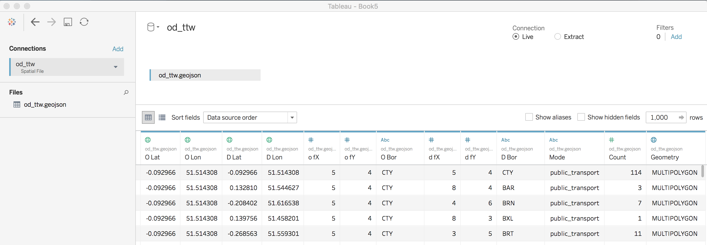
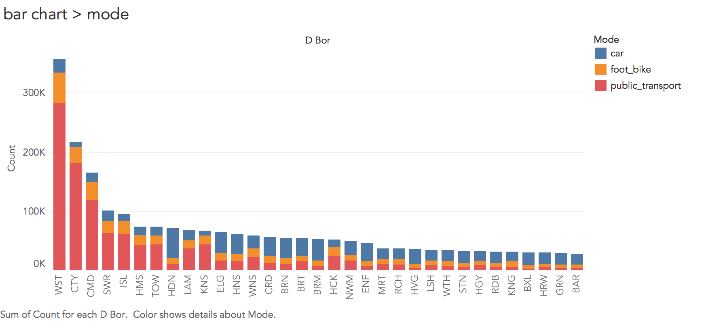
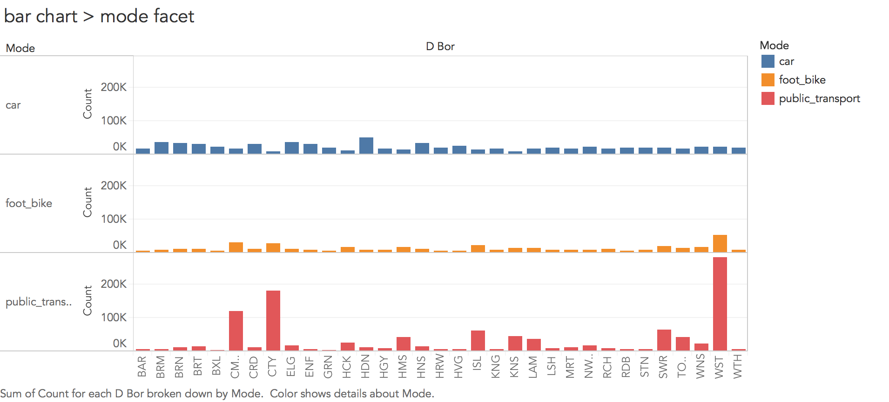
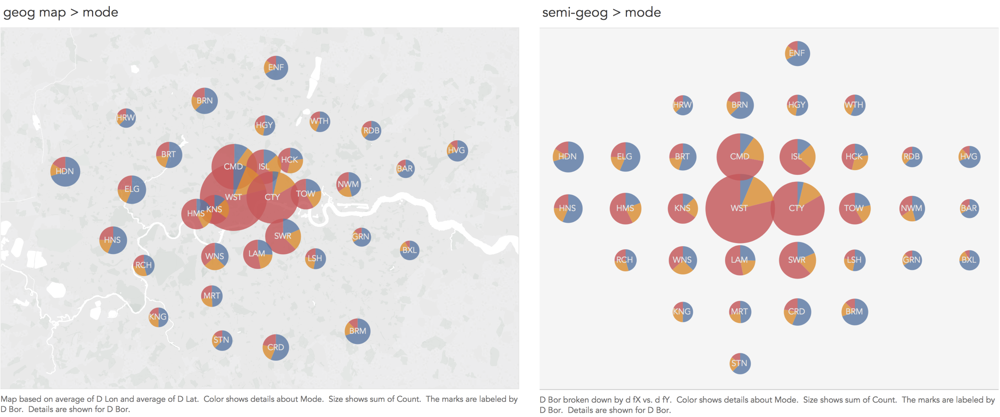
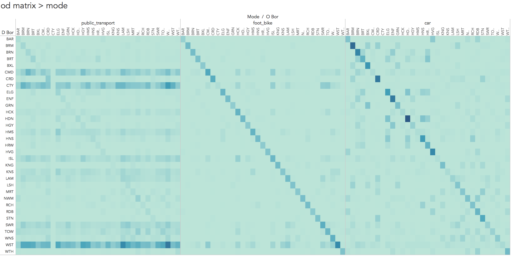
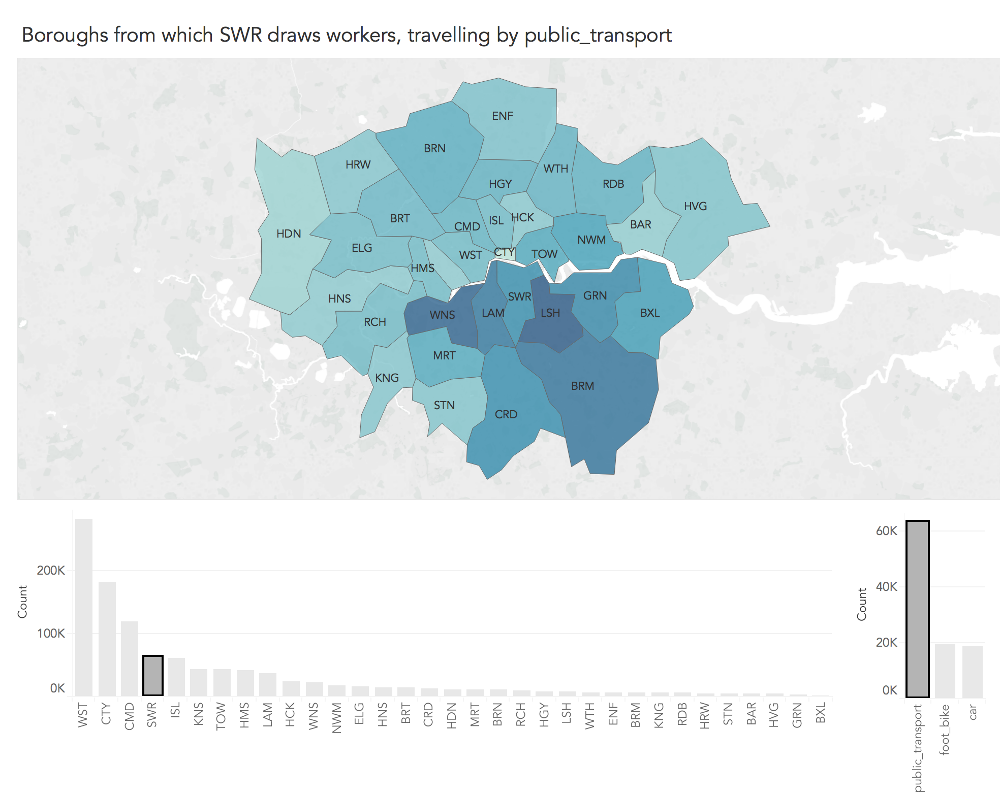
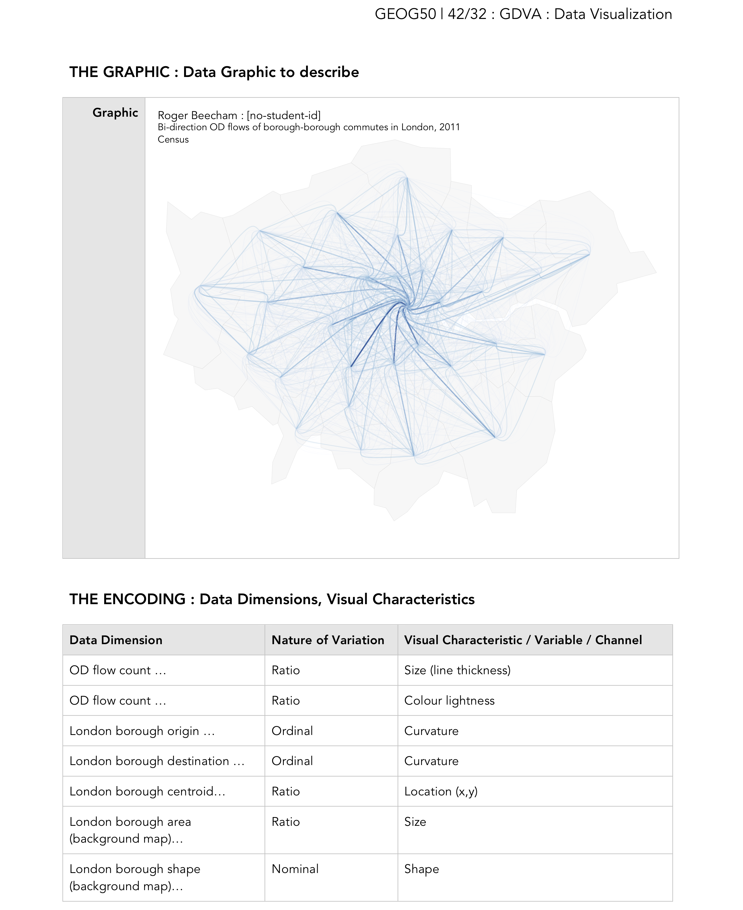

Task 1. Download data using UK Data Service interface
A very large, often tedious part, of data science workflow is data collection and cleaning. You will of course be aware of the ever-expanding array of datasets made available by organisations, institutions and private companies. Over the last decade, well-documented Application Programming Interfaces (APIs) have increasingly been used as a consistent and replicable means of accessing data. Often these are designed with bindings to programming languages and environments such as Python and R and so can be built into the workflows of analysts with comparatively rudimentary programming experience. These bindings are typically contributed by developers in the Data Science community — Kyle Walker’s tidycensus R package provides a very useful interface to the US Census Bureau’s Census data.
In this session you will query the 2011 UK Census data using a (more traditional) point- and click- interface: the UK Data Service. Whilst this has its disadvantages — the interface is idiosyncratic and replicating workflows, or adjusting queries, is far more tedious than when working with an API — the UK Data Service provides access to a reasonably large number of administrative datasets that you may find useful, especially when you progress onto coursework activity. After the practical, you may wish to spend some time exploring the datasets available to you.
The instructions below provide details for collecting a special class of Census data — origin-destination (OD) flow data. In this case, the data you will collect describe travel-to-work flows between Local Authority Districts (or Boroughs) of London, of which there are 33. For each borough-to-borough OD pair — for example Camden-to-Westminster — the dataset you collect will describe the total number of residents living in Camden who commute to Westminster. You will query a dataset that differentiates by travel mode — so the relative number of residents commuting between pairs of boroughs by car, bike or public transport can be considered.
|
Wow — that was quite a set of instructions! This somewhat reinforces the point about the benefits of accessing data programmatically. However, the above hopefully introduces you to the UK Data Service, which interfaces with a large array of datasets likely to be useful to you. You should now have a delimited text file ( Glancing at the field labels in the top four rows and the data in the subsequent rows you should get a sense of how the OD data are structured. Each record (row) is a unique origin-destination (OD pair) describing commuter flows between pairs of boroughs. The quantitative fields represent counts of residents commuting between each borough-borough pair by dominant travel mode. The travel mode categories are mutually exclusive and so individuals are not counted twice along the columns. |
Task 2. Load data into Tableau

Keen observers might have noticed that in the wicid_output.csv file there are 1,024 records containing data — 32 boroughs^2. I mentioned earlier that there are 33 London boroughs. Unfortunately for this category of WICID output two boroughs — City of London and Westminster — are merged. The data in this download are also not organised ideally for Tableau and it would be useful to add in spatial data describing the geometry and relative location of London boroughs so that spatial relations can be explored.
That the data harvested from some external resource is not ideally formatted is to be expected. As I mentioned earlier, about 80% of data analysis time is spent on data processing activities. To speed things up, I’ve re-arranged the dataset, gotten access to data definitions that allow Westminster and City of London to be differentiated and augmented the OD dataset with spatial context (geometries from the Open Geography Portal and semi-spatial layout via aftertheflood). I’ve written the dataset to a .geojson file.
Inspecting the Data Source window you will notice that Tableau automatically makes inferences about data types and measurement levels. Fields with numerical values appear with a # in the first row of the table headers, textual fields with Abc and geographically referenced data with a geodesic globe-like symbol, interpreted by Tableau as WGS84 — pretty clever.
A quick overview of the fields available to you:
-
O Lat,O Lon: together, the centroid of the origin borough (home) of commuters. -
D Lat,D Lon: together, the centroid of the destination borough (workplace) of commuters. -
O fX,O fY: together, the approximate location of the origin borough (home) of commuters. -
D fX,D fY: together, the approximate location of the destination borough (workplace) of commuters. -
O Bor: the origin borough (home) of commuters, shortened to three letters. -
D Bor: the destination borough (workplace) of commuters, shortened to three letters. -
Mode: the travel mode taken (public_transport,foot_bike,car). -
Count: the number of commuters travelling between each OD borough using a particular travel mode. -
Geometry: an array of coordinates (typeMULTIPOLYGON) describing the geometry of each destination borough.
Note that the primary key for the table is <O Bor, D Bor, Mode> : there is a unique record for each possible OD borough and travel mode pair.
Task 3. Generate a bar chart of commute frequency by travel mode, ordered by borough (frequency)

If you’ve worked through the Tableau page the worksheet display should be familiar to you. The data are automatically organised into Dimensions and Measures (left margin). Dimensions are typically categorical variables used for grouping and pivoting data, which might be achieved via faceting to form small multiples or through colour hue, shape or other visual channels. Measures are quantitative (numerical) variables and mapped to size, colour and other visual channels. You can change this allocation by clicking and dragging on field names: drag o fX, o fY, d fX, d fY from Measures to Dimensions.
At the top are the Columns and Rows shelves. These can be loosely thought of as the x-position and y-position for your charts in Tableau. In the second margin from left is the Marks window. This provides access to the numerous visual channels to which data can be mapped.
You will soon discover that Tableau aggregates data according to the configuration provided to Rows, Columns and Marks. You will often wish to disaggregate, and to do so you will need to drag an attribute to the Detail icon (under Marks).
Interpreting the chart (Figure 2) requires a little familiarity with London’s geography. We find that a very large number of commuting journeys are to two boroughs : Westminster and the City of London (although also Camden). These are boroughs in central London clearly containing many jobs and where travel by car is problematic (notice the lack of blue). Boroughs with smaller bars overall are generally more peripheral (outer) boroughs and notice the change in colour here — for outer London boroughs, commuting by car is more common.
Thinking about the visualization fundamentals introduced in the lecture, the choice of encodings is effective. We are encoding a continuous quantitative variable (Count) with bar length, we differentiate a nominal category variable (Mode) using colour hue and we order boroughs using position along the x-axis based on frequency. However, you might also remember from the lecture than in their seminal study and in the crowd-sourced follow-up study, Cleveland & McGill and Heer & Bostock found judging lengths along an aligned scale to be considerably more effective than on an unaligned scale. In the stacked bar chart in Figure 2, the foot_bike and car categories are not aligned. This is likely to be problematic were more categories of travel mode (say five or six) to be compared. You may wish to update your chart to generate bars on an aligned scale for each category of travel mode (faceting on travel mode — as in Figure 3).

|
If you managed to create the faceted chart in Figure 3, you may wish to select the sort descending button in the top toolbar for each travel mode. This allows you to further explore the dominant travel mode into London boroughs. Great, you’ve just performed an interactive visual analysis query! |
Task 4. Generate a map of commute frequency by travel mode, ordered by borough (spatial position)

So far we’ve a sense of commute frequency and travel mode type into London’s 33 boroughs and made some inferences about the nature of commuting given some existing knowledge of the city: that London-resident workers travel in greatest number to boroughs located in central London and that travel by public transport dominates for those travelling into these boroughs for work, while the reverse is true of peripheral boroughs with fewer commuters and travel by car dominating.
These claims could be investigated more directly by manipulating the plot encodings such that the bars in Figures 2 and 3 are not ordered by frequency, but by geographic position.
A problem with arranging data graphics according to their exact geographic position, clearly, is that activity tends to concentrate in more densely populated areas (with jobs in this case) — the circles overlap one another in central London. Again, there are much more problematic instances of this than in Figure 4. However, one solution is to relax geography a little and arrange boroughs according to their approximate spatial position (right of Figure 4). There is a large literature on how to effect semi-geographic arrangements. The arrangement in Figure 4 is based on the aftertheflood layout, but Meulemans et al. (2017) provides an overview and suggests an interesting and elegant approach to automatically generating these layouts.
|
Organising boroughs according to their geographic position has several advantages: it reveals a reasonably complex set of spatial relations. You might have noticed that Figure 4 does not use the most effective visual encoding channels: we cannot show frequencies on an aligned scale since position is already in use. Angle and area are also not the best visual channels for conveying quantities. The design decisions can nevertheless be justified. With only three categories to distinguish using colour hue, angle works fine at conveying the relative importance of travel mode and with such large differences in absolute frequencies between central London boroughs and those at the periphery, the fact that we underestimate circle size for Westminster and the City (given Cleveland & McGill 1984) is not so much of a concern. Representing information on both the absolute and relative size of a phenomenon simultaneously is a common requirement in visualization design: see Wickham & Hofman (2011) for a more detailed deiscussion of the challenges. |
Task 5. Generate a full OD matrix of frequencies by travel mode

You may have noticed that in the analysis above we’ve simply been aggregating over destinations and summarising frequencies by travel mode into those boroughs. We’ve not considered the origin data — the boroughs from which residents are travelling. There are 33 boroughs in London and therefore 3,267 (33^2 x 3 travel modes) possible OD pairs to analyse. This makes (visual) analysis of the full OD dataset challenging.
In Figure 5, the full OD data are represented as an OD matrix. Boroughs are ordered alphabetically left-to-right and top-to-bottom and cells coloured according to frequency.
Task 6. Generate an interactive choropleth of frequencies by origin

Figure 5 is certainly data dense — 3,267 OD flow values are encoded! However, since cells in the matrix are ordered alphabetically, it is difficult to make inferences around more complex spatial patterns in OD commuting behaviour. Representing spatial relations in OD data is challenging. Attempts that involve drawing lines between OD pairs often fail (e.g. this blog post). One solution, proposed by Jo Wood is Spatially-Ordered OD matrices, where the cells in the OD matrix are reordered according to their geographic position. This results in spatially-arranged small multiple maps — in this case there would be 33 representing destinations (workplaces), each displaying counts of commuter origins.
Generating these layouts in Tableau is not easy, though is possible. Inspired by this technique we will generate an interactive choropleth which focuses on journeys to each destination borough (workplace) in turn, displaying frequencies of the origin boroughs from which the destination borough draws workers.
Assessed Task
This is a short, assessed task, borrowed heavilty from an activity written by Jason Dykes. It does not assume knowledge or skills above what you have learnt in the lecture and this session. Ideally, the task should be completed within the practical session — the aim is not to burden you with additional work.
The task is designed to:
-
check that you can produce outputs in Tableau
-
assess your understanding of data types and their visual encoding
The document into which you will work can be downloaded from this link (.docx format). Save this document to a local directory. Once you’ve completed the task, save using the filename "DVA_Unit5_<StudentID>", replacing <student ID> with your own student ID number. Upload the completed document to the VLE, via the Assessment page.
In Figure 7, I’ve included an example of a graphic I created on the same dataset, but deliberately not using (and not possible with) Tableau. Consult the lecture slides for a reminder of data types and visual variables (or channels).
Assessed task : Export
Assessed task : Describe
Assessed task : Upload

Content by Roger Beecham | 2018 | Licensed under Creative Commons BY 4.0.